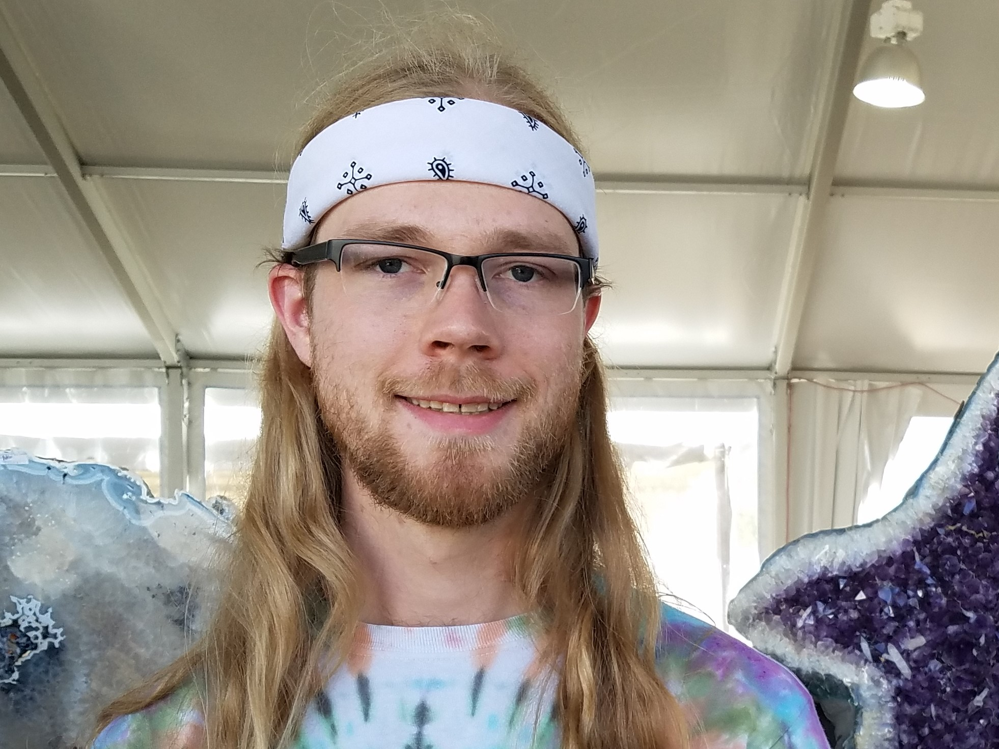

About Me
I am a Full-Stack Developer with a passion for creating user-friendly, functional tools that address real-world problems. I am proficient at using HTML, CSS, and Javascript to create complete dynamic web-pages with complex functionality and precise positioning. I am detail- oriented and well organized. These qualities helped me to succeed in earning both a Bachelor of Science in Mathematics and a Bachelor of Arts in chemistry in my four years at the University of Kansas. It is my lifelong passion for mathematics that drew me towards computer programming. I believe that writing code and practicing mathematics require very similar skill sets. My experience writing mathematical proofs gave me an understanding of the same logical structures that are used in programming. I am able to succeed in fast paced, team-driven environments. I can follow directions well, or take initiative where appropriate.
I was born and raised in Manhattan KS. After graduating high school, I moved down the road to Lawrence to become a Jayhawk. In my four years at the University of Kansas in Lawrence, I completed a B.S. in math and a B.A. in chemistry. After graduation, I stayed in Lawrence to pursue my passion for making pizzas. I then left my career in pizza making to develop my skills for moving things around in a warehouse. Despite the naturally rewarding nature of my careers in pizza-making and general warehouse work, I have decided that it is now time to pursue a new career in web development.
My interests include all things related to math, science, and music. I enjoy coding because it involves the manipulation of precisely defined objects and rules. Because of this, I believe that the types of thought processes required to code successfully are similar to those required to be good at math. I am currently working to establish and sharpen my skills as a web developer. As I continue to build my knowledge of web-based development, I hope to also continue to expand my knowledge to include other areas of software development.